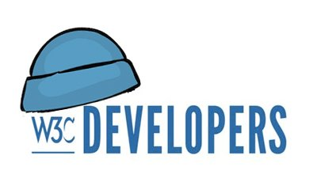

Read the main outcomes of the #color #W3CWorkshop at https://www.w3.org/Graphics/Color/Workshop/report.html#summary and watch all the talks' üé¨ on @w3c's YT channel: https://www.youtube.com/playlist?list=PLNhYw8KaLq2UP_XETn9k_bh2338EWGbSd https://twitter.com/w3c/status/1587106638854594562
https://twitter.com/w3cdevs/status/1587737500327575553The #WebXR Augmented Reality module was released as a #CandidateRecommendation last week, a signal the spec is now considered mostly stable @ImmersiveWebW3C #AR #timetoimplement https://twitter.com/w3c/status/1587362513636786179
This module of #WebXR adds augmented-reality hardware-specific functionalities to WebXR - making it possible to use it not just in fully virtual spaces, but also in spaces overlaid with the real world
https://www.w3.org/TR/webxr-ar-module-1/
https://twitter.com/w3cdevs/status/1589652200527396864Find more about browser support for these #AR features https://immersiveweb.dev/#supporttable - this already works both on mobile "magic window" mode and with full-fledged AR headsets
https://twitter.com/w3cdevs/status/1589652205959008257This completes the core #WebXR spec which was released as a #CandidateRecommendation earlier this year https://twitter.com/w3cdevs/status/1509894550927650838
https://twitter.com/w3cdevs/status/1589652208370724864Watch the Augmented Reality-related üé¨ on the WebXR YouTube channel https://www.youtube.com/watch?v=RaB_Uyqx6Q4&list=PLW2iP2Rz9wsKmxAoOBSW35w0pABnssdKI
https://twitter.com/w3cdevs/status/1589652213659766784Discover and follow some of the people behind the spec https://twitter.com/AysSomething/status/1587861216508231681
https://twitter.com/w3cdevs/status/1589652211012800513And if you have any feedback on the specification, head to the #GitHub repo! https://github.com/immersive-web/webxr-ar-module
https://twitter.com/w3cdevs/status/1589652215895306241The recently launched @w3c WebDX #CommunityGroup is looking at coordinated approaches to improve the overall developer experience of the #WebPlatform - which a number surveys have shown to be lacking in several aspects. https://twitter.com/w3c/status/1589988726922510336
What needs fixing? A first pillar of the work of the group is to facilitate shared research on developer needs, to improve the shared understanding of the gaps to maximize impact.
https://github.com/web-platform-dx/admin/blob/main/charter.md
https://twitter.com/w3cdevs/status/1589991508203036673A key theme of the results of these surveys is how painful it is for developers to deal with fragmentation among browsers. This led to the launch of the Interop project, focused on reducing that fragmentation. https://mobile.twitter.com/foolip/status/1574390465113325568
https://twitter.com/w3cdevs/status/1589991516231323648This builds on the cross-vendor collaboration > that was at the source of the @mozdevnet Developer Needs Assessment surveys in 2019 and 2020
https://mobile.twitter.com/MozDevNet/status/1339308367463002112
https://twitter.com/w3cdevs/status/1589991513496637441This work on feature mapping constitutes the second focus of the group, where we expect to work with @mozdevnet, @caniuse and others to make it easier to navigate the non-stop evolution of the #WebPlatform.
https://twitter.com/w3cdevs/status/1589991521176424448The WebDX Community Group is helping with providing additional data on fragmentation, with additional surveys running on @mozdevnet, but also by improving how we map and track progress on features deployment - see @tidoust's initial research the topic
https://github.com/web-platform-dx/feature-set/blob/main/towards-features.md
https://twitter.com/w3cdevs/status/1589991518814994434If you want to help, the WebDX #CommunityGroup as all Community Groups is open for all to join! https://www.w3.org/community/webdx/
https://twitter.com/w3cdevs/status/1589991523462320129üó≥Ô∏è Election time for @tag! There are seven nominees for three seats: Brandon Baraban (@koodos), @sundress (@igalia), @rhiaro (@digitalbazaar), @hober (@Apple), Martin Thomson (@mozilla), @LeaVerou (W3C #InvitedExpert nominated by @openjs) and Song Xu (@ChinaMobile7).
Read all TAG nominees statements, describing their aspirations on the role of the @tag and their impact on it: https://www.w3.org/2022/11/15-tag-nominations.html

https://twitter.com/w3cdevs/status/1597233265718747136The @w3c membership elects the TAG members. This election is open until 14 December 2022.
The @w3ctag serves as an advocate for developer interests and consistent design principles. Learn more: https://twitter.com/w3cdevs/status/957974903122219008
https://twitter.com/w3cdevs/status/1597233272698044419Happy Blue Beanie Day! @bluebeanieday
Thank you for supporting and adopting #WebStandards #a11y
https://twitter.com/w3cdevs/status/1597916851224604673